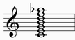
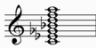
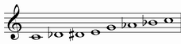
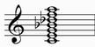
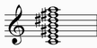

| GRADE | NAME | NOTES | NOTES TRANSPOSED IN C |
| I | HARMONIC MAJOR | |
|
| II | DORIAN b5 | |
|
| III | PHRYGIAN b4 | |
|
| IV | LYDIAN b3 | |
|
| V | MIXOLYDIAN b9 | |
|
| VI | LYDIAN AUGMENTED #2 | |
|
| VII | LOCRIAN bb7 | |
|
HARMONIC MAJOR |
|
Alternative names: Ionian flat 6
It starts from the first grade of harmonic major scale
| HARMONIC MINOR | C | D | Eb | F | G | Ab | B | C | |||||
| HARMONIC MAJOR | C | D | E | F | G | Ab | B | C |
Structure: 2212131
| chords over first notes: | ||
| Triad: | Seventh chord: | Complete chord: |
| major | major seventh | |
 |
 |
 |
Chord simbols: C, C(maj7), C^, C9(maj7), C^9, C^(b6), C^(b13)
Enharmonic chord simbols: C^(#5), Cmaj7(#5), C^9(#5)
DORIAN b5 |
|
Alternative names: Locrian sharp 2 sharp 6, Dorian flat 5
It starts from the second grade of harmonic major scale
Structure: 2121312
| chords over first notes: | ||
| Triad: | Seventh chord: | Complete chord: |
| diminished | half diminished | |
 |
 |
 |
Chord simbols: Cm7(b5), Cm9(b5), CØ, CØ9
PHRYGIAN b4 |
|
Alternative names: Phrygian flat 4, Superlocrian natural 5, Superphrygian
It starts from the third grade of harmonic major scale
Structure: 1213122
| chords over first notes: | |
| Triad: | Seventh chord: |
| minor | minor seventh |
 |
 |
Enharmonic interpretation:

| chords over first notes: | |
| Triad: | Seventh chord: |
| major | dominant |
|
 |
Enharmonic chord simbols: C7, C7(#5), C7(b9 #9 b13)
LYDIAN b3 |
|
Alternative names: Lydian flat 3, Jazz Minor sharp 4, Jazz Minor #11, Lydian Diminished
It starts from the fourth grade of harmonic major scale
Structure: 2131221
| chords over first notes: | ||
| Triad: | Seventh chord: | Complete chord: |
| minor | minor with major seventh | |
|
 |
 |
Chord simbols: Cm, Cm(maj7), Cm^9, Cm^(#11)
Enharmonic chord simbols: Cm^(b5)
MIXOLYDIAN b9 |
|
Alternative names: Mixolydian flat 2
It starts from the fifth grade of harmonic major scale
Structure: 1312212
| chords over first notes: | ||
| Triad: | Seventh chord: | Complete chord: |
| major | dominant | |
|
|
 |
Chord simbols: C, C7, C7(b9), C13(b9)
LYDIAN AUGMENTED #2 |
|
Alternative names: Lydian sharp 2 sharp 5
It starts from the sixth grade of harmonic major scale
Structure: 3122121
| chords over first notes: | ||
| Triad: | Seventh chord: | Complete chord: |
| augmented | major seventh with augmented fifth | |
 |
 |
 |
Chord simbols: C+, Cmaj7(#5), C^(#5), Cmaj7(#5 #9 #11)
Enharmonic chord simbols: C^(b5), Cm^(b5)
LOCRIAN bb7 |
|
Alternative names: Locrian diminished 7
It starts from the seventh grade of harmonic major scale
Structure: 1221213
| chords over first notes: | |
| Triad: | Seventh chord: |
| diminished | diminished |
|
 |
Chord simbols: Cdim, C°, C°7